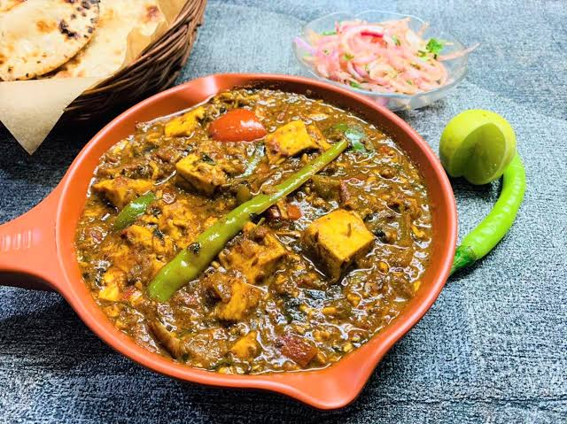

Your Panner Kohlapuri Reciepe
A typical Maharastarian taste Profile, with very rich,complex spice notes, a crispy parantha or steamed rice, along with some amti dal or kachumber
Total Time: 50-55 minutes
Ingredients
- Coconut: 1 cup(70 gms approx),grated
- Dry Red Chillies: 4 pieces
- Onion: 2, finely chopped
- 750 gms,cut into cubes
- Caesar Dressing
Preprations
- In a Karahi,dry roasted grated Coconut,cloves,cinnamon, whole pepper, red chillies
Time:25 minutes
- Heat oil in karahi and saute the onions till soft and transculent, add ginger-garlic paste done and the oil begins to seperate.
Time:10 minutes
- Add, the coarsely ground spices, mix well and fry for 5-10 minutes , Add wter, Paneer
Time:20 minutes